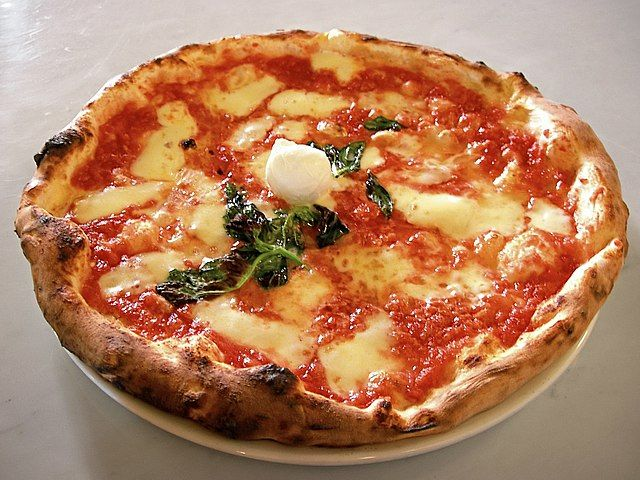

Pizza Margherita

Typical Neopolitan pizza, roundish in shape.
Pizza Margherita is a Neopolitan pizza garnished with hand-crushed peeled tomatoes, mozzarella, fresh basil leaves, and extra virgin olive oil. The dough is stretched by the pizzaiolo and baked in an oven, which is traditionally made of brick and wood-fired. This pizza is exquisite due to it's complete simplicity and the freshest, most basic of ingredients. It is the physical manifestation of the phrase: "Keep it simple, silly".
Ingredients
- Fresh dough
- crushed tomatoes
- fresh mozzarella
- fresh basil leaves
- extra virgin olive oil
Steps
- build brick oven
- heat oven to roughly 400 degrees Fahrenheit
- stretch the dough into a rough circle shape
- pound the dough with your fists until it stops crying
- liberally apply the EVOO to the dough
- apply crushed tomates, mozzarella and more EVOO
- put in the oven, being sure to move it around and turn it often to cook evenly
- cook to your desired liking, usually when crust is golden brown and cheese is melted
- take out of oven, apply fresh basil and cut into desired slices
- take out second mortgage to pay for the oven and cheese